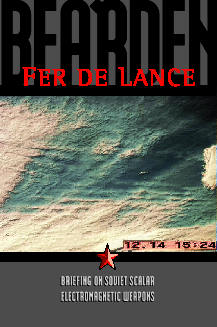

Now Available
Second Edition Updated (see Table of Contents)

Order the 2002 updated 2nd Edition Now
Table of Contents (First Edition) see below
by Lt. Col. T.E. Bearden (retired), 1986 Copyright
Table of Contents
Introduction Slide Numbers.
ADDITIONAL NOTES AND REFERENCES
APPENDIX 1: SOME IMPORTANT INDICATORS AND DESTRUCTIVE TESTING
More Frightening Than the Mind of Man Has Ever Imagined
Scalar EM Inoculation and its Implications
APPENDIX III; CONTINUING THE SCENARIO